SOC169 · Possible IDOR Attack Detected
- Categoria
- Ataques Web
- Caso
- SOC169
- Registro
- Encaminhamento ao N2
Resumo
O IP 134[.]209[.]118[.]137 (DigitalOcean), malicioso no VirusTotal, fez requisições ao WebServer1005 (172.16.17.15) com respostas HTTP 200. O host não tinha arquivos suspeitos. Como o 200 isolado não confirma exploração de IDOR, o caso foi encaminhado ao N2.
IOCs
| Tipo | Valor | Observação |
|---|---|---|
| IP | 134[.]209[.]118[.]137 | IP externo, malicioso no VirusTotal. |
| Host | WebServer1005 / 172.16.17.15 | Alvo das requisições. |
Passo a passo da investigação
Registro do incidente
Ticket aberto para investigação de possível ataque IDOR.
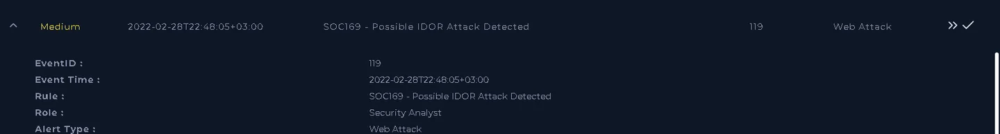
Investigação
Análise do IP externo
O endereço IP 134.209.118.137 foi consultado no VirusTotal, que retornou uma indicação de atividade maliciosa. O IP está associado à DigitalOcean.
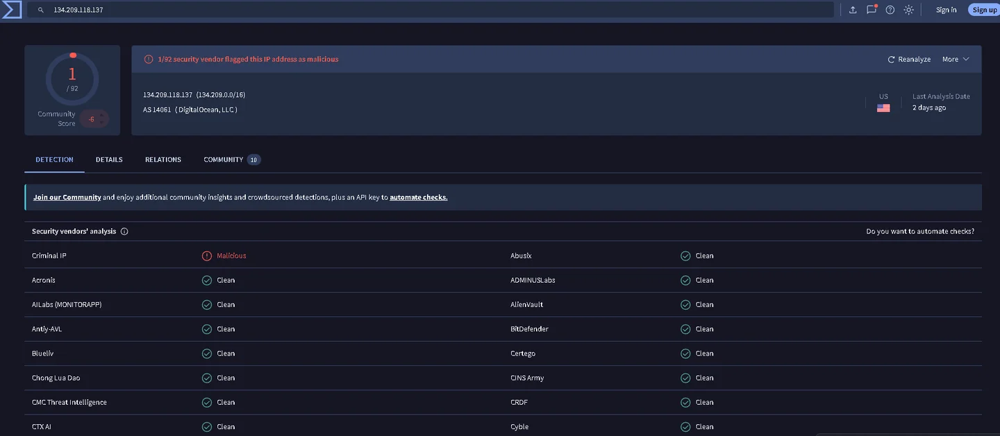
Identificação do host interno
O IP interno 172.16.17.15 foi consultado no Endpoint Security e associado à máquina WebServer1005. Na verificação do host, não foram identificados arquivos suspeitos; foram encontrados apenas arquivos considerados normais.
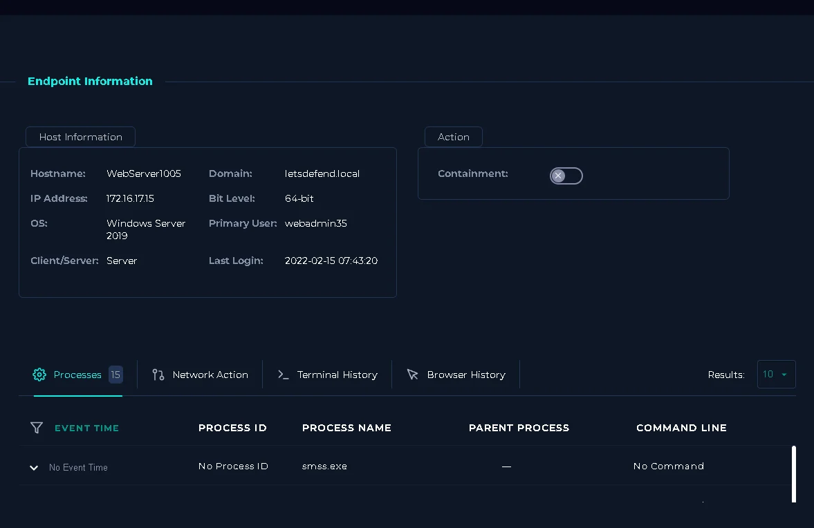
Análise dos logs
Os registros foram analisados no Log Management, com foco nas requisições originadas pelo IP 134.209.118.137 e em seus respectivos códigos de status.
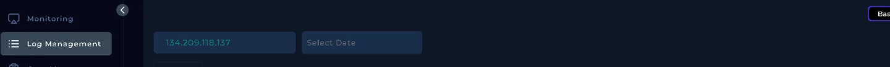
Os registros consultados apresentaram respostas HTTP 200 para as requisições verificadas. Esse código indica que as requisições foram processadas com sucesso; isoladamente, porém, não confirma a exploração de uma vulnerabilidade IDOR.
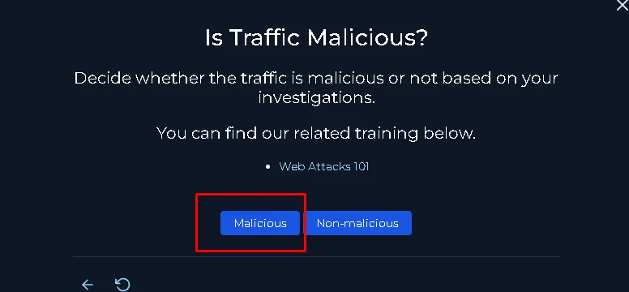
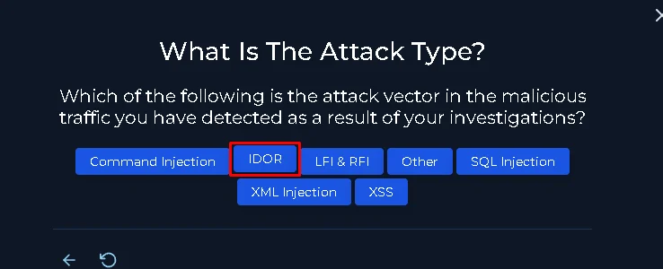
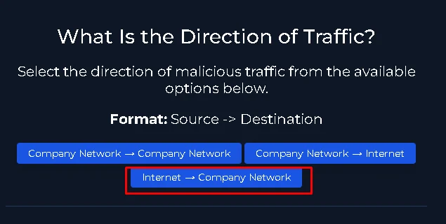
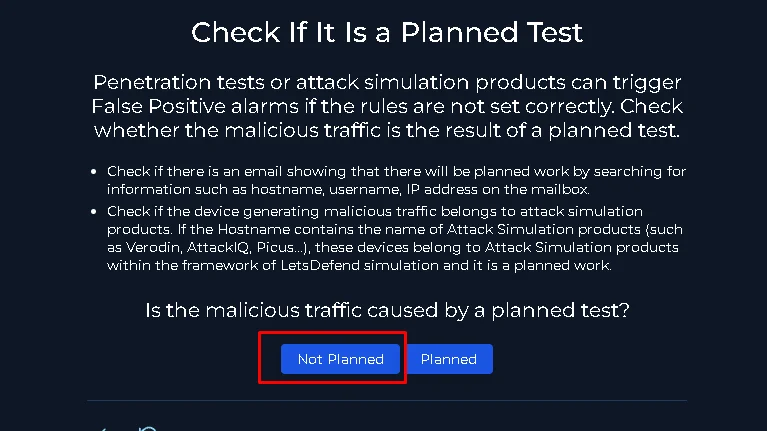
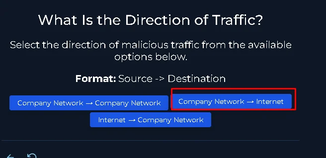
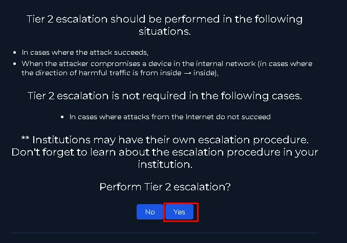
Conclusão e encaminhamento
O IP 134.209.118.137 realizou requisições à máquina WebServer1005, e as requisições analisadas retornaram respostas HTTP 200. Embora o VirusTotal tenha sinalizado o IP como malicioso, a verificação realizada no host não identificou arquivos suspeitos. O caso será encaminhado aos analistas N2 para aprofundamento e conclusão.
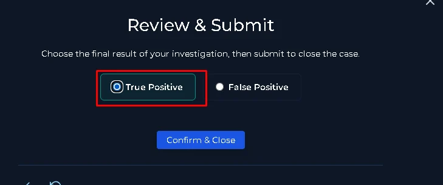
Lições aprendidas
- HTTP 200 mostra resposta bem-sucedida, não exploração.
- Escalar quando faltam evidências para concluir o impacto.
Exercício simulado. Algumas capturas foram recortadas ou tiveram campos ocultados.